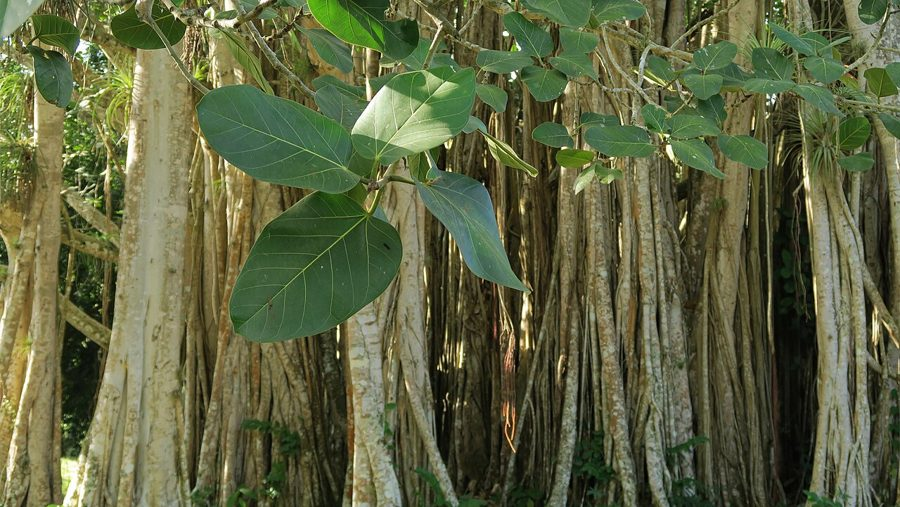

पीपलPeepal
Ficus religiosa · Moraceae · FLR-0006

- Scientific name
- Ficus religiosa L.
- Family
- Moraceae
- Hindi
- पीपल / अश्वत्थ
- Status here
- native
- IUCN
- LC
When to look कब देखें
Present all year.
पीपल / Peepal
Ficus religiosa L. — Moraceae
पीपल — वह पावन और विशालकाय वृक्ष जिसके नीचे महात्मा बुद्ध को ज्ञान (बोध) प्राप्त हुआ था, जो पूर्वी उत्तर प्रदेश के हर गाँव-चौराहे के केंद्र में विराजमान रहता है, और जो अपने छोटे-छोटे अंजीरों के ज़रिये भारत में किसी भी अन्य पेड़ की तुलना में सबसे अधिक पक्षियों और जंगली जीवों को साल भर जीवनदायी भोजन प्रदान करता है। पीपल केवल धार्मिक आस्था का ही केंद्र नहीं, बल्कि हमारे समूचे मैदानी क्षेत्र की सबसे महत्वपूर्ण कीस्टोन प्रजाति है।
Quick Identification त्वरित पहचान
| Feature | Description |
|---|---|
| Size & Shape | Large deciduous or semi-evergreen tree (20–30 m tall) with a massive, wide-spreading crown |
| Leaves | Shiny, heart-shaped (cordate) leaves with a characteristically long, narrow, pointed drip-tip (2–5 cm) |
| Leaf Petiole | Long, slender, flexible stalks (5–10 cm) that cause the leaves to tremble and shimmer in the slightest breeze |
| Bark | Smooth, pale grey to whitish on young trees, becoming scaly with thin papery flakes on older trunks |
| Fruit (Figs) | Small, round (1–1.5 cm diameter) syconia borne in pairs in leaf axils; green ripening to dark purple-black |
| Growth Habit | Frequently begins life as a hemi-epiphyte in wall crevices, building cracks, or forks of other trees |
Field tip: Look for heart-shaped leaves that end in an extremely long, tail-like pointed tip (drip-tip). The constant rustling and shimmering sound of the leaves, even in the absolute absence of a strong wind, is a key diagnostic feature of the Peepal tree.
Morphology आकारिकी
Biometrics (typical measurements in the Gangetic plain):
| Feature | Measurement |
|---|---|
| Tree height | 20–30 m |
| Leaf length (excluding tip) | 10–18 cm |
| Leaf width | 8–13 cm |
| Leaf drip-tip (acumen) | 2–5 cm |
| Fig diameter | 1.0–1.5 cm |
Habit: Large deciduous to semi-evergreen tree, 20–30 m tall. Trunk thick, often buttressed at base in very old specimens. Crown broad, open, often umbrella-shaped.
Bark: Pale grey to whitish, smooth in young trees; on mature trees becomes scaly with thin papery flakes peeling off in patches.
Leaves: Alternate, simple, broadly ovate-cordate (heart-shaped), 10–18 cm long, 8–13 cm wide. Drip-tip is extended into a thin tail (acumen) often 2–5 cm long — this drip-tip channels rainwater off the leaf surface, reducing pathogen growth and shedding dust. Leaves leathery, smooth, dark green above, paler below. Long flexible petioles (5–10 cm) make leaves tremble in slight breezes.
Latex: White milky sap exudes from any broken part — typical of Moraceae.
Inflorescence: A syconium — the fig itself is an enclosed flower cluster. Hundreds of tiny flowers line the inside of a hollow receptacle. Pollinated only by a single species of fig wasp (Blastophaga quadraticeps) that enters through a tiny pore (ostiole).
Figs: 1–1.5 cm diameter, in pairs in leaf axils. Green when young, ripening to dark purple-red. Borne in large numbers — a single tree can produce hundreds of thousands per fruiting cycle.
Phenology: Briefly deciduous in late winter to early spring (February–March); new flush of bronze-pink leaves appears in March–April (this is patta-jhaadu season — old leaves shed, new leaves emerge).
हिंदी: सबसे विशेष पत्ती की पूँछ (drip-tip) — पानी को बहाने के लिए, धूल हटाने के लिए। पीपल लगभग सदाबहार है, लेकिन फरवरी-मार्च में पुरानी पत्तियाँ झड़ती हैं और मार्च-अप्रैल में चमकीली नई पत्तियाँ निकलती हैं।
The Fig–Fig Wasp Mutualism अंजीर और अंजीर-मक्खी का सम्बंध
This is one of the most extraordinary co-evolutionary partnerships on Earth, and it operates inside every peepal fig — invisibly.
The peepal "fruit" is not a fruit at all. It is an inverted flower cluster — a hollow chamber with hundreds of tiny flowers lining the inside walls. The opening (ostiole) is tiny — barely visible.
Pollination by one wasp species: Peepal is pollinated only by Blastophaga quadraticeps, a 1–2 mm fig wasp. The female wasp squeezes through the ostiole (losing her wings in the process), pollinates the flowers, and lays her eggs inside some of them. She dies inside.
Inside the fig: Wasp larvae develop inside galled flowers. Adult males (wingless) emerge first, mate with females (still inside their galls), then chew exit tunnels through the fig wall before dying. Females emerge through these tunnels, collect pollen, and fly out to find new figs — repeating the cycle.
One tree, two genders: A single tree produces both male-phase (pollen-producing) and female-phase (seed-producing) figs sequentially, ensuring the wasps and tree remain synchronized.
If the wasp goes extinct, so does the peepal. This obligate partnership has lasted ~80 million years. Each Ficus species has its own dedicated wasp species.
हिंदी: पीपल का अंजीर एक उल्टा फूल है — अंदर हज़ारों छोटे फूल हैं।
केवल एक छोटी 1–2 मिमी की मक्खी (Blastophaga) इसे परागण कर सकती है।
मादा मक्खी अंजीर में घुसकर अंडे देती है और मर जाती है — उसके बच्चे अंदर बड़े होते हैं।
पीपल और इस मक्खी का रिश्ता 8 करोड़ साल पुराना है।
The Hemi-Epiphyte Lifestyle अर्ध-आरोही जीवन
Peepal often starts life not on the ground but on another tree, a wall, or a roof crack. Birds eat figs and excrete the seeds wherever they perch. The seeds germinate in tiny accumulations of dust and humus in tree forks, wall cracks, or temple cornices.
Stage 1 (epiphyte): Young peepal grows as a small plant on its host substrate, drawing water and nutrients from rain and air. Aerial roots descend, searching for soil.
Stage 2 (strangler — rare in peepal compared to banyan): When aerial roots reach the ground, they thicken and fuse, eventually surrounding the host trunk. The original host tree may eventually die. Peepal is a less aggressive strangler than its relatives (banyan, Ficus benghalensis).
Stage 3 (free-standing): Once established, peepal becomes a large independent tree, often outliving the structure that nursed it.
Why this matters: Peepal seedlings on village walls or temple structures are often left undisturbed because the tree is sacred. Over time the tree grows and can damage the wall — leading to a tension between conservation and structural integrity. Walking through any old UP town shows this pattern repeatedly.
हिंदी: पीपल अक्सर पेड़ पर, दीवार पर, या मंदिर की दरार में उगता है — इसे पक्षी बीज देते हैं।
पवित्र होने के कारण इसे काटा नहीं जाता — फिर यह बड़ा होकर कभी-कभी दीवार को तोड़ देता है।
Ecological Role पारिस्थितिक भूमिका
Keystone fruit producer: Peepal figs are produced year-round in small numbers, with two larger seasonal peaks (May–July and September–November). This makes peepal one of the only reliable fruit sources during "lean" months when other trees are not fruiting. Fig-eating species depend on peepal during these periods.
Birds that eat peepal figs:
- Rose-ringed Parakeet (तोता)
- Common Myna, Brahminy Starling, Jungle Myna (मैना)
- Coppersmith Barbet, Brown-headed Barbet (बसन्ता)
- Asian Koel (कोयल) — especially during the cuckoo's breeding season
- Indian Grey Hornbill (धनेश)
- Bulbuls (बुलबुल) — red-vented and red-whiskered
- Flameback Woodpecker (कठफोड़वा)
- Ashy Prinia (राखी फुदकी) — for insects on figs
- Indian Roller (नीलकंठ) — perch and insect-catching
- Many more — peepal supports more bird species than almost any other tree in India
Mammals:
- Fruit bats (especially Indian Flying Fox, Pteropus medius) — major seed dispersers
- Three-striped Palm Squirrel
- Rhesus Macaque, Bonnet Macaque (where present)
- Smaller bats (insectivorous) — roost in dense canopy
Insects: Pollinated only by the fig wasp; also hosts butterfly larvae (Common Crow uses peepal as a host plant), and many parasitic and predatory wasps that follow the fig wasps.
Roost tree: Peepal canopy is a major night roost for parakeets, mynas, and crows — sometimes thousands of birds gather at dusk.
Shade and microclimate: Peepal canopy moderates ground temperature by 5–10°C in summer — creating a refuge for ground-foraging birds, lizards, and people alike.
हिंदी: पीपल भारत के सबसे महत्वपूर्ण कीस्टोन पेड़ों में से एक है।
100 से अधिक पक्षी और जीव इसके फल खाते हैं।
साल भर थोड़े-थोड़े फल देता है — इसलिए जब बाकी पेड़ खाली होते हैं, तब भी इस पर भोजन मिलता है।
गर्मियों में इसकी छाँव में तापमान 5–10°C कम होता है।
Night Oxygen Release — CAM Photosynthesis रात में ऑक्सीजन और CAM प्रकाश-संश्लेषण
The folk claim that "peepal releases oxygen at night" is partly true — and the science is more interesting than the simplification.
Most plants do C3 photosynthesis — they open their stomata (leaf pores) during the day, take in CO₂, and release O₂. At night, photosynthesis stops; only respiration continues, releasing CO₂.
Peepal uses CAM (Crassulacean Acid Metabolism) or facultatively switches to CAM under stress. CAM plants open their stomata at night, take in CO₂, store it as malic acid, then close stomata during the day and process the stored CO₂ into sugars in daylight. This conserves water — only important under drought stress.
So: Peepal exchanges gases (and releases some O₂) at night more than typical trees do. The popular belief is rooted in real biology, though exaggerated — peepal does not produce more total O₂ at night than during the day. The interesting truth is that peepal is one of the few large trees that does any significant night-time gas exchange at all.
हिंदी — सच्चाई:
अधिकांश पौधे रात में ऑक्सीजन नहीं छोड़ते। पीपल CAM प्रकाश-संश्लेषण के कारण रात में भी कुछ ऑक्सीजन छोड़ सकता है।
लोक मान्यता पूरी तरह गलत नहीं है — विज्ञान में सच का अंश है।
लेकिन पीपल रात में दिन से अधिक ऑक्सीजन नहीं छोड़ता।
Life Cycle / Phenology जीवन चक्र
- Germination: From bird-deposited seeds, usually on walls, tree branches, or in cracks
- Sapling growth: Slow initially (epiphytic phase); accelerates after roots reach ground
- Mature tree: 30–50 years to reach full size; can live 500+ years
- Leaf phenology: Briefly deciduous February–March; new bronze-pink leaves March–April
- Fruiting: Continuous year-round with peaks in May–July and September–November
- Reproduction: Through bird-dispersed seeds; rarely from cuttings (peepal is hard to propagate by cutting)
हिंदी: पीपल बहुत लंबे समय तक जीता है — 500 साल या अधिक।
फरवरी-मार्च में पुरानी पत्तियाँ झड़ती हैं।
मार्च-अप्रैल में चमकीले नए पत्ते निकलते हैं — गुलाबी-तांबे रंग के।
Cultural and Religious Significance सांस्कृतिक और धार्मिक महत्व
- Bodhi tree: Buddha attained enlightenment under a peepal (Bodhi Vriksha) at Bodh Gaya — the original tree's lineage continues today
- Vishnu: Considered an incarnation of Vishnu (especially the trunk); Krishna refers to himself as "Ashvattha among trees" in the Bhagavad Gita (10.26)
- Saturday tree: Worshipped on Saturday by many Hindu traditions; offered water and circumambulated (पीपल की परिक्रमा)
- Marriage rituals: Peepal-neem marriage (पीपल-नीम विवाह) is a traditional ceremony in some parts of UP to address family astrological concerns
- Never cut: Cutting a peepal is taboo across most of UP. This taboo has protected the species and made it the most reliable village tree in the region.
- Jain tradition: One of the sacred Kalpavriksha trees
- Names: अश्वत्थ ("where horses stand" — possibly referring to its broad shade); बोधि वृक्ष; देव वृक्ष
हिंदी: पीपल हिन्दू, बौद्ध, और जैन — तीनों परंपराओं में पवित्र है।
इसी की वजह से यह आज भी हर गाँव में मिलता है — सांस्कृतिक संरक्षण ने इसे बचाया है।
Agricultural / Human Relevance कृषि और मानव संबंध
Shade tree: Peepal is one of the most important village shade trees — chowks (squares), bus stops, market areas all have peepal canopies. Cools ground by 5–10°C.
Air quality: Large dense canopy traps dust; CAM-related night O₂ release contributes (modestly) to local air.
Medicinal uses (Ayurveda):
- Bark: astringent, used for diarrhoea, dysentery, skin conditions
- Leaves: traditional uses for constipation, asthma
- Latex: applied externally for warts, cracked heels
- Roots: ulcers, gum problems
Important note: All medicinal uses traditional; modern clinical evidence is preliminary. Self-medication can be harmful.
Negative aspects:
- Roots can damage walls, drains, and foundations as the tree grows
- Heavy leaf fall in February–March can block drains
- Falling branches in storms (very large canopy) can cause damage
हिंदी: पीपल गाँव का सबसे महत्वपूर्ण छायादार पेड़ है।
पारंपरिक चिकित्सा में छाल, पत्ती, और जड़ का उपयोग।
कभी-कभी जड़ें दीवार, नाली, या नींव को नुकसान पहुँचाती हैं।
Expected Locally स्थानीय रूप से अपेक्षित
Not a field record. Written from published accounts for eastern Uttar Pradesh. No confirmed local sighting yet — if you have seen it, that is what the atlas needs.
अभी तक स्थानीय पुष्टि नहीं। यह विवरण प्रकाशित स्रोतों से है, किसी अवलोकन से नहीं।
Peepal trees are ubiquitous in Basti district, with almost every village and hamlet featuring at least one large mature tree, often with an associated brick or earthen platform (chabootra) serving as a communal gathering place. The leaf fall in February–March and the rapid emergence of coppery-pink new leaves in late March are landmark phenological events in the district. Small saplings are frequently observed growing on the brickwork of old wells, ruins, and temple structures throughout the rural areas.
Distribution वितरण
Global range: Native to the Indian subcontinent and parts of Indochina, ranging from Pakistan, India, and Nepal through Bangladesh and Myanmar to Yunnan (China), Vietnam, and Thailand.
In India: Found throughout the country, both wild in deciduous forests and widely planted in rural and urban areas, ascending up to 1,500 m in the outer Himalayas.
In Uttar Pradesh: Common and ubiquitous in all districts, associated with human settlements, roadside avenues, temples, and agricultural margins.
In Basti district / eastern UP: Abundant year-round in every village, town, temple compound, and field margin throughout the district.
Range notes: Long-lived trees represent permanent ecological anchor points.
Research Questions शोध प्रश्न
Anyone can investigate these | कोई भी इन प्रश्नों की जाँच कर सकता है
- How many bird species visit a single peepal in fruiting season? / फल लगते समय एक पीपल पर कितने पक्षी आते हैं? — Watch one tree for 1 hour and record every species. Repeat across months — builds a phenology dataset.
- Are young peepals growing in your village? / आपके गाँव में नए पीपल उग रहे हैं? — Count saplings on walls, in tree forks, in cracks. This tracks regeneration.
- Which peepal in your area is the oldest? / आपके गाँव का सबसे पुराना पीपल कौन सा है? — Ask elders. Document its location, size, and any associated stories. Old peepals are biological and cultural treasures.
- When does the old leaf fall begin each year? / पुरानी पत्तियाँ कब झड़ना शुरू होती हैं? — Record the date annually. Tracks climate-related phenology shifts.
- Do peepal-neem married pairs exist in your village? / आपके गाँव में पीपल-नीम विवाह कहाँ है? — Document each pair and the family/community that maintains it. A folk conservation practice worth recording.
Similar Species मिलती-जुलती प्रजातियाँ
| Species | How to tell apart | हिंदी |
|---|---|---|
| Banyan (Ficus benghalensis) | Massive aerial roots forming pillars; rounder, blunter leaves; larger figs | बरगद — हवाई जड़ें |
| Bo Tree (Ficus religiosa subsp. rumphii) | Same species, regional variant | वही जाति |
| Cluster Fig (Ficus racemosa) | Figs in dense clusters on trunk, not in leaf axils | गूलर — तने पर अंजीर |
| Pakar (Ficus virens) | Leaves smaller, narrower; no drip-tip | पाकड़ |
| Ashy Fig (Ficus arnottiana) | Similar leaf but underside grey; rocky habitats | पाहाड़ी पीपल |
Field rule: A heart-shaped leaf with a long thin drip-tip + a large open-crowned tree + figs in pairs at leaf bases + village or temple location = peepal. The drip-tip is the most reliable single feature.
Taxonomy & Classification वर्गीकरण
Original description. Ficus religiosa was described by Carl Linnaeus in 1753 in Species Plantarum, vol. 2, p. 1059. Type locality: India. The genus name Ficus is the classical Latin name for fig, while religiosa refers to its sacred status in Indian religions.
Subspecies. Monotypic — no subspecies are currently recognised.
Family and order placement. Placed in the order Rosales, family Moraceae (mulberry or fig family). This family contains around 1,100 species, with the genus Ficus being the largest with over 800 species.
Phylogenetic notes. Ficus religiosa belongs to the subgenus Urostigma (the hemi-epiphytic or strangler figs) and section Urostigma. It has no close living wild relatives within its immediate section, occupying a distinct evolutionary branch.
IUCN status rationale. Evaluated as Least Concern (LC). Widespread, highly abundant, and culturally protected throughout its range, the species faces no significant threats, though individual trees in urban areas are sometimes cut during development.
Photo Gallery फोटो गैलरी
References संदर्भ
- Linnaeus, C. (1753). Species Plantarum. Laurentius Salvius, Holmiae.
- Cook, J.M. & Rasplus, J.-Y. (2003). Mutualists with attitude: coevolving fig wasps and figs. Trends in Ecology & Evolution, 18(5): 241–248.
- Janzen, D.H. (1979). How to be a fig. Annual Review of Ecology and Systematics, 10: 13–51.
- Borges, R.M. (2015). How to be a fig wasp parasite on the fig–fig wasp mutualism. Current Opinion in Insect Science, 8: 34–40.
- Hooker, J.D. (1885–1887). Flora of British India, Vol. 5. Reeve & Co., London.
- Bharucha, F.R. & Joshi, M.C. (1957). The succession of vegetation on the Indian wasteland with reference to Ficus religiosa. Tropical Ecology, 1: 1–13.
- Sahney, M. et al. (2018). Cultural and ecological significance of Ficus religiosa in India. Asian Agri-History, 22(2): 119–128.
- Botanical Survey of India — Flora of Uttar Pradesh.
- GBIF Occurrence Data — Ficus religiosa records (2010–2024).
Source file: species/flora/trees/peepal.md